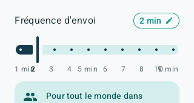

Curseur de la fréquence : quand deux minutes se touchent
Sur la capture de la CI (0.4.262, téléphone de 320 dp), on lisait « 1 mi2 » et « 19 min ». Première cause, corrigée sans rien changer à l'aperçu validé : les minutes n'étaient pas sous leurs crans.
Reste un cas que l'aperçu validé ne montre pas (il est dessiné sur 360 dp, texte normal) : même sous leurs crans, sur ce téléphone de 320 dp, « 9 » et « 10 min » … ; sur un écran de 360 dp, ils ne sont qu'à … dp l'un de l'autre, et se chevauchent dès que le texte est agrandi dans Android (Réglages ▸ Affichage ▸ Taille de la police). Que faire quand deux minutes se touchent ?
Ce qui est corrigé
0.4.262 · capture de la CI

« 1 mi2 » et « 19 min » : les minutes n'étaient pas sous leurs crans.Sous les crans · 320 dpChaque minute sous son cran, comme l'aperçu validé. « 9 » colle encore à « 10 min ».
Quand deux minutes se touchent · à choisir
Le téléphone de 320 dp de la CI, texte normal ; puis A sur un écran de 360 dp au texte agrandi.
A (recommandée)« 1 min » et « 10 min » se centrent sous leur cran quand ils touchent leur voisin, et débordent un peu dans la marge de la feuille (trait rose : bord du curseur). Tout reste écrit, à la taille choisie.BLe chiffre qui toucherait « 1 min » ou « 10 min » ne s'écrit pas (ici le 9 ; s'il est en gras, la pastille dit la valeur).CLes minutes en plus petit, juste assez pour qu'elles tiennent (ici … au lieu de 12), le reste du texte à la taille choisie.A · 360 dp, texte × 1,3Même règle avec le texte agrandi : tout reste écrit, à la taille choisie.
Pourquoi A. Rien ne disparaît, et les minutes gardent la taille de texte choisie dans Android. Sur 320 dp, A suffit sans rien cacher jusqu'à un texte × … ; au-delà, en dernier recours, un chiffre qui toucherait encore son voisin ne s'écrirait pas (comme B).
Largeurs des libellés mesurées sur la capture de l'émulateur de la CI (« 10 min » : 40 dp en texte normal) ; crans à 10 dp des bouts du curseur, comme sur cette capture.